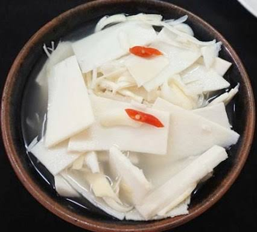

Home
Canh Mang Chua

Description
Canh Mang Chua translates to Sour Bamboo Soup. This dish reminds me of home and is very comforting. My mom would
make this dish every so often for family meals.
This dish uses pickled bamboo that can be found at most asian grocery stores, especially those that carry a lot
of Vietnamese products. The protein used for this specific recipe is shrimp, but it can be replaced with spare
ribs, minced pork, etc. Vietnamese soups are very versatile and can be made with whatever you have available.
Ingredients
- oil
- shallots
- minced shrimp or tiny, dried shrimp
- pickled bamboo
- water
- rice paddy
- seasonings (fish sauce, salt, pepper, chicken bouillion, msg)
Steps
- Drain pickled bamboo and rince lightly. Cut into bite size pieces.
- Heat up some oil in a pot. Once hot, add in shallots. Stir until translucent and fragrant.
- Add in shrimp. Season with the dry seasonings. Stir until cooked and pink.
- Add water. When warm, taste and season.
- Once water boils, add in bamboo. When water boils again, taste and season.
- Add in rice paddy. Remove pot from heat.